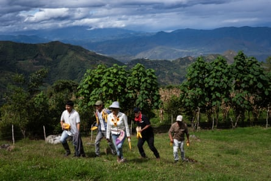
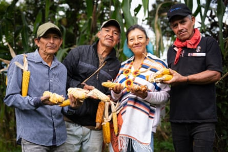
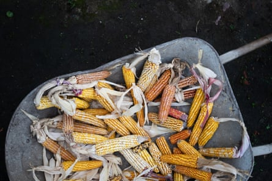
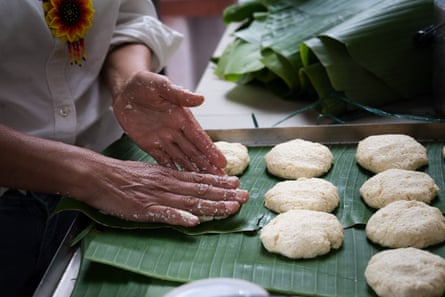
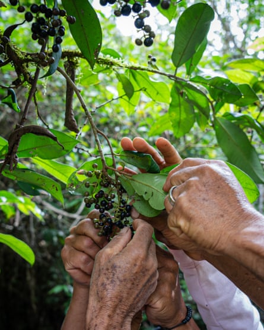
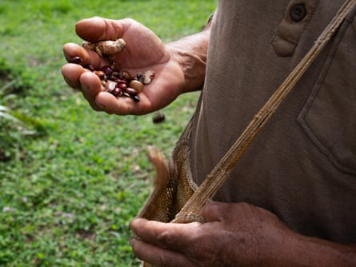
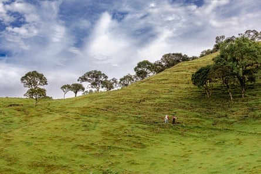
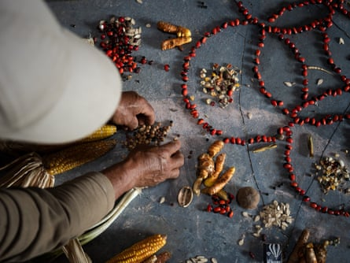

O n a hillside farm in San Lorenzo , in the mountains of Colombia ’s southern Nariño department, Aura Alina Domínguez presses maize seeds into the damp soil. Around her, farmers Alberto Gómez, José Castillo and Javier Castillo arrive with their selected seeds, stored in shigras – hand-woven shoulder bags – as has been done for generations.
In San Lorenzo, they call themselves “seed guardians” for their role in protecting this living heritage and passing it down the generations. “Each seed carries our grandparents’ story,” says Domínguez, arranging the dried cobs that hang from her rafters.
Domínguez, Gómez, and the Castillos are among the farmers supporting draft legislation , under review by the lower house of the Colombian parliament, that would ban genetically modified (GM) seeds , which they claim threaten their traditions, livelihoods and food sovereignty.
The initiative has the backing of Indigenous, peasant and environmental organisations, but faces opposition from agribusiness and sectors that support GM as a strategy for economic development.
The seed guardians protect heritage seed varieties passed down through generations of farmers in San Lorenzo, Nariño, Colombia.Photograph: Andrés Cornejo Pinto/The Guardian
The introduction of GM crops in Colombia has caused heated debate since the adoption of GM cotton in 2002 and GM maize in 2007, when national policy aligned with global biotech trends. According to statistics from the Colombian Agricultural Institute (ICA) , between 2003 and 2020, 1.07m hectares (2.6m acres) were planted with GM cotton and maize, allegedly resulting in $301.7m (£220m) in additional income due to higher yields and reduced pesticide use.
Yet, rural communities have increasingly questioned whether these policies truly reflect their interests or primarily benefit large-scale producers. Grassroots organisations have criticised the ICA for prioritising commercial agriculture over local seed sovereignty and for failing to consult Indigenous and peasant communities on crucial decisions.
For more than a decade, peasant communities have made seed protection a shared cause in Colombia . In San Lorenzo, the rejection of GM seeds evolved into organised political opposition after people detected the use of such seeds in nearby crops in 2012. They then feared that GM seeds might cross-pollinate with their native varieties, altering their traits and threatening their ability to preserve them.
From left to right: Alberto Gómez, José Castillo, Aura Alina Domínguez and Javier Castillo holding maize grown from heritage seeds.Photograph: Andrés Cornejo Pinto/The Guardian
The alarm prompted them to act. They travelled from village to village, hosted workshops, collected 1,300 signatures and drafted a citizen-led proposal. The initiative was backed by the Seed Guardians of Life Network , a national platform comprising farming and environmental groups, as well as local collectives and the municipal government.
It was formally submitted to the town council under Colombia’s law on participatory democracy. In 2018, San Lorenzo declared itself a GMO-free territory .
In 2021, a group of Indigenous organisations filed a lawsuit demanding that the Colombian government protect traditional seeds from genetic contamination. Two years later, the constitutional court ruled in their favour and ordered legal and technical safeguards.
Still, the proposals submitted by the ICA were deemed inadequate by community leaders. In 2024, a coalition of rural, Indigenous and environmental organisations led by Grupo Semillas , a Colombian nonprofit promoting sustainable agriculture, introduced legislation that seeks to amend article 81 of the Colombian constitution to ban the use, import and sale of GM seeds nationwide.
The initiative has gained support from President Gustavo Petro and his government, which has framed it as part of a broader agenda for food sovereignty. Senator Catalina Pérez has called it “an opportunity to restore producers’ autonomy”.
Proponents of organic native seeds say they should be recognised a part of a collective heritage.Photograph: Andrés Cornejo Pinto/The Guardian
Grupo Semillas and the Seed Guardians of Life Network have also promoted it. According to Germán Vélez, director of Grupo Semillas, the reform aims to “recognise native seeds as collective heritage and stop the genetic erosion threatening the country’s food sovereignty”.
But not everyone agrees. Since San Lorenzo’s first victory against GM crops, the agribusiness industry has seen the reaction to genetically modified seeds as a threat to national regulation.
The Colombian Association of Seeds and Biotechnology (Acosemillas) , which represents seed producers and companies, first filed a lawsuit against the municipality, arguing that it had overstepped its legal authority. From the producers’ perspective, allowing municipalities to regulate GM crops independently could set a precedent.
Aura Alina Domínguez shapes corn bread dough on a mat of leaves.Photograph: Andrés Cornejo Pinto/The Guardian
“How can a municipality reject a technology approved by the country’s health authorities?” says Leonardo Ariza, general manager of Acosemillas.
Ariza says GM crops can “coexist with traditional varieties” and alleges that Colombian regulations include “biosafety protocols requiring isolation from native maize and the use of refuges” to prevent contamination.
Ariza did not provide evidence to support his allegations. Research by the University of the Andes found that pollen from GM maize can travel as far as 700 metres (2,300ft) – more than double the 300-metre buffer required by the ICA.
Harvesting organic berries. Knowledge of native plants and culinary traditions is kept alive by communities in San Lorenzo.Photograph: Andrés Cornejo Pinto/The Guardian
In April , the legislation prohibiting GM was debated in a public hearing in Colombia’s lower house, where farmers, scientists and lawmakers presented their arguments. The bill must still pass eight legislative debates before it can become law .
In a recent statement, Acosemillas called for the bill to be withdrawn, arguing that it “goes against the principles of a democratic state by trying to limit farmers’ right to choose what seeds to plant, based on the mistaken belief that it threatens wildlife or other production systems”.
Acosemillas’ initiative has found support among some experts. According to Moisés Wasserman, a biochemist and professor at the National University of Colombia, the ban would restrict policies aimed at mitigating the climate crisis and addressing food insecurity.
“This is a strange movement that fights the solutions instead of the problems,” Wasserman says, adding that such restrictions could also hinder the development of biotechnologies in the health and environmental fields.
Meanwhile, the agroindustry continues to spread. In 2023, Colombia registered a record 154,677 hectares (383,000 acres) of GM crops. Genetically modified maize accounted for more than 36% of the country’s planted area, up 20% from the previous year.
Monsanto developed many of the GM seeds used in Colombia to resist glyphosate, a herbicide classified by the World Health Organization as “probably carcinogenic” to humans. Since Bayer acquired Monsanto in 2018 , it has faced more than 150,000 lawsuits in the US related to the chemical’s side effects, with payouts exceeding $11bn (£8bn).
A recent study reviewing decades of data on GM crops concluded that these seeds generally increase yields and have mixed effects on pesticide use, wildlife and deforestation. Other studies have raised concerns about the health risks associated with prolonged glyphosate exposure, particularly among agricultural workers.
Farmers carry seeds in traditionalshigras– handwoven shoulder bags – as they have done for generations.Photograph: Andrés Cornejo Pinto/The Guardian
The debate occurs amid increasing market concentration. According to environmental NGOs, Bayer and Corteva control nearly 40% of the global seed market . For smallholder networks, this raises alarms about the erosion of food autonomy and growing dependence on seeds and inputs controlled by a handful of corporations.
According to the Food and Agriculture Organization (FAO) , approximately 75% of the genetic diversity of crops has been lost globally over the past century – a trend that has also affected Latin America, home to some of the planet’s richest agricultural biodiversity.
FAO reports show that essential components of biodiversity for food and agriculture continue to decline in the region, including at the genetic, species and ecosystem levels.
Domínguez and José Castillo walk through the Andean landscape around San Lorenzo.Photograph: Andrés Cornejo Pinto/The Guardian
Although more than half of GM crops are planted by smallholder farmers in Colombia, their expansion has coincided with a steep decline in native maize. Colombia is home to at least 23 native maize varieties as identified in early agricultural studies, and hundreds of local varieties adapted to different regions and cultures across the country.
For communities such as San Lorenzo, losing this diversity is not just a biological concern, but a cultural one tied to ancestral knowledge and ways of life.
Inspired by San Lorenzo, municipalities across Colombia, as well as Indigenous territories such as La Unión, Riosucio and the Zenú people , have passed similar local resolutions banning GM seeds, with many expressing concern about the lack of relevant national policies.
Colombian anthropologist Hernán Barón Camacho says the defence of seeds is “a form of nonviolent resistance, a reoccupation of territory based on care, diversity and autonomy”.
According to the Seed Guardians of Life Network , the loss of diversity is not just ecological but also political. As native varieties disappear, rural communities lose their ability to decide what to grow and how to grow it.
19 19. José Castillo carefully arranges a colourful mandala made of seeds. San Lorenzo, Nariño, Colombia – 18 April 2025 Photograph: Andrés Cornejo Pinto/The GuardianPhotograph: Andrés Cornejo Pinto/The Guardian
In San Lorenzo, community seed exchange continues. Families and neighbours share seed dishes made with ingredients grown from their land. Through a traditional lending system, they reproduce native varieties such as morocho maize.
“Living in peace means knowing our seeds are free,” says Alberto Gómez.
Domínguez says their fight echoes a global question: who decides what we plant and how we feed ourselves? “We are not against technology,” she says. “We’re just asking to be the ones who decide what belongs in our fields, and what doesn’t.”